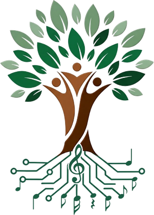

Aulas de violão gratuitas aos sábados de manhã. Aqui acontece o que nenhum outro ramo do projeto vê: pai, mãe e filho aprendendo o mesmo acorde, na mesma roda, na mesma manhã.

Na maioria dos lugares, a aula de música separa as pessoas por idade: criança de um lado, adulto de outro. Aqui não. No mesmo sábado sentam na roda o filho adolescente, a mãe, o vizinho aposentado — cada um no seu tempo, todos no mesmo acorde.
A música é meio e fim ao mesmo tempo. Ensina técnica de verdade, constrói disciplina e autoestima, e é por essa porta que muitas famílias chegam ao Desenvolva-se e acabam conhecendo os outros ramos do projeto.
Quem conduz as turmas é o Maurício Marques, músico e professor do projeto. É dele o trabalho de fazer uma sala com gente de todas as idades caminhar junta, sem que ninguém fique para trás — e é a técnica dele que sustenta o nível das aulas.
Sem mensalidade e sem taxa de matrícula
Sábados de manhã
Na aula você pode usar um dos nossos. Para ensaiar em casa, é preciso ter o seu.
No espaço da Igreja Nossa Senhora do Caravaggio, em Porto Alegre
Esse ramo não se sustenta sozinho — ele existe porque duas instituições do bairro abriram espaço para ele.
A Associação de Moradores do Bairro São Sebastião e Jardim Lindóia é uma parceria importante do projeto — é ela que enraíza as aulas na vida do bairro e aproxima as famílias da vizinhança.
É a igreja que disponibiliza o espaço onde as aulas acontecem todos os sábados. Sem essa sala cedida, não haveria roda de violão.
Neste momento não há vagas abertas — e preferimos dizer isso com todas as letras a deixar você preencher um formulário sem retorno. Deixe seus dados e avisamos assim que abrir vaga.
Já é aluno? Atualize seu cadastro aqui →